Cuiabá
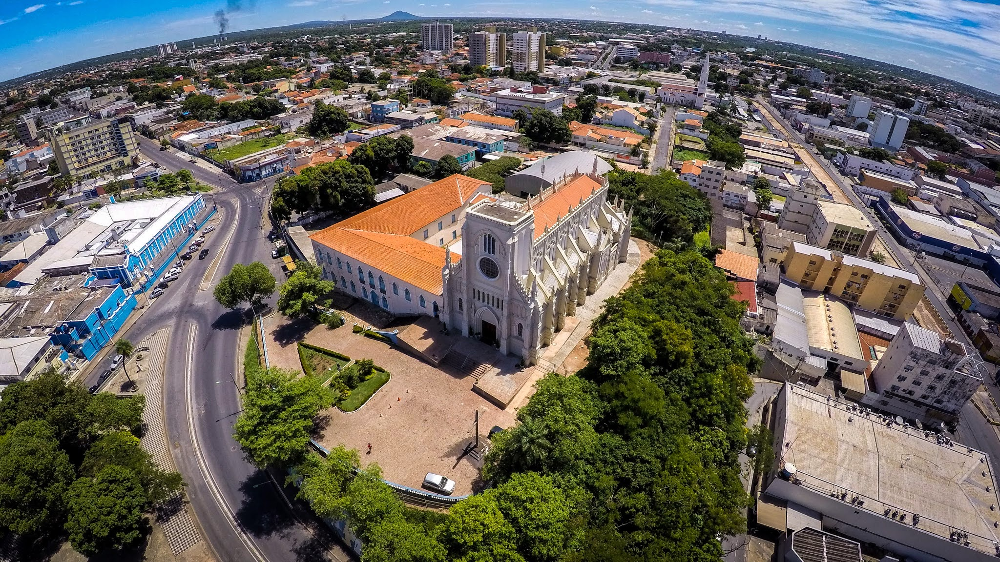Cuiabá, a capital do estado de Mato Grosso, é uma cidade que se destaca pela sua importância histórica, geográfica e cultural. Localizada no coração do Brasil, é a porta de entrada para a região do Pantanal, uma das maiores e mais biodiversas áreas alagadas do planeta, além de ser uma das principais conexões com a Amazônia. A cidade tem um papel estratégico, sendo um polo de turismo para quem deseja explorar tanto as belezas naturais da região quanto a sua rica cultura e história.
Cuiabá possui um clima quente e seco, mas oferece diversas opções turísticas, como a visita a monumentos históricos, parques naturais e festas típicas. Sua culinária é uma mistura de influências indígenas, africanas e europeias, e os turistas podem desfrutar de pratos típicos como o arroz com pequi e o chucrute mato-grossense. Além disso, Cuiabá tem uma forte tradição cultural, com festivais, danças típicas e músicas regionais, como o cururu e o siriri.
A cidade também é um destino popular para ecoturismo, com acesso fácil ao Pantanal e a diversas áreas de preservação ambiental, proporcionando uma experiência única de contato com a natureza.
Principais pontos turísticos
- Catedral de Cuiabá (Catedral Basílica do Senhor Bom Jesus de Cuiabá) 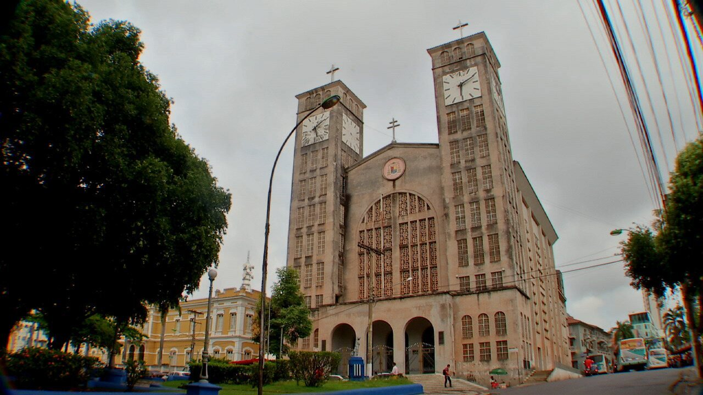
- Museu do Rio Cuiabá 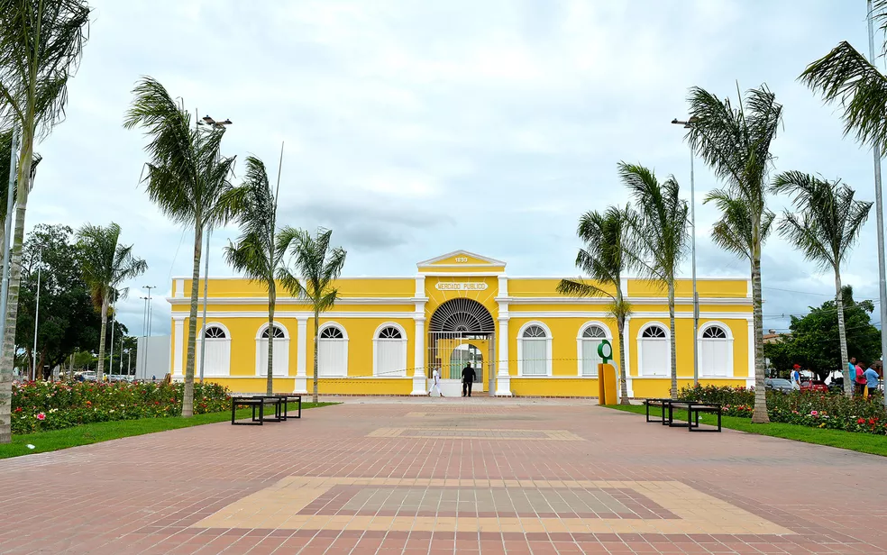
- Palácio Paiaguás 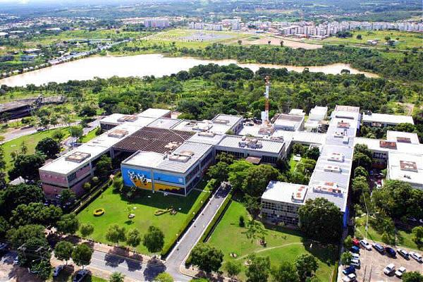
- Parque Nacional de Chapada dos Guimarães 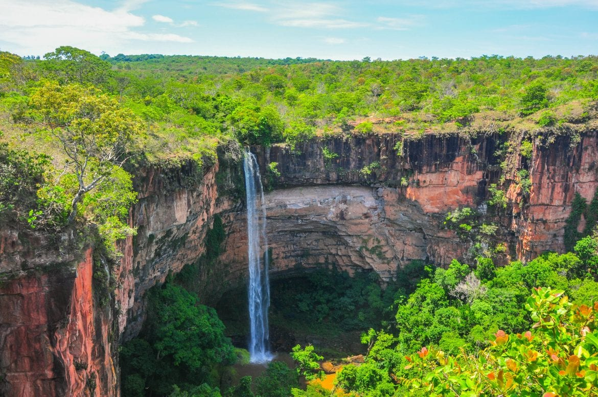
- Museu de Arte de Mato Grosso (MAMT) 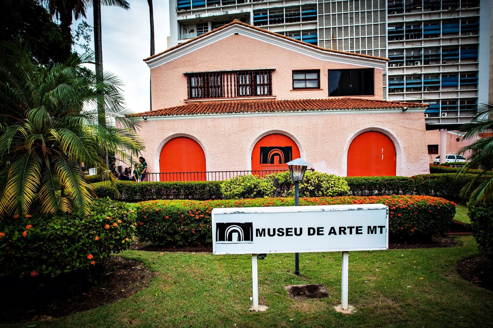
A Catedral de Cuiabá é um dos principais marcos históricos e religiosos da cidade. Construída no século XVIII, sua arquitetura colonial barroca é impressionante. A igreja está localizada na Praça Alencastro e possui uma rica história religiosa e cultural, com destaque para seus vitrais e altar.
É um ponto de visitação imperdível para quem deseja entender mais sobre a história de Cuiabá e sua influência religiosa.
O Museu do Rio Cuiabá é um espaço dedicado à preservação e promoção da história do Rio Cuiabá e sua importância para a cidade e para a região de Mato Grosso. O museu possui exposições sobre a fauna, flora e a ocupação humana ao longo do rio.
Esse museu oferece uma excelente oportunidade para os turistas conhecerem mais sobre o desenvolvimento de Cuiabá e a relação da cidade com o seu principal curso dágua.
O Palácio Paiaguás é a sede do governo do estado de Mato Grosso e é um exemplo de arquitetura moderna e imponente. O edifício possui grande importância histórica e política, além de ser rodeado por um belo jardim. Ele oferece uma vista privilegiada da cidade.
O Palácio Paiaguás é um local simbólico para a história política do estado, sendo um ponto de interesse para quem deseja conhecer mais sobre a administração pública local.
A Chapada dos Guimarães é uma das mais famosas atrações naturais de Mato Grosso. O parque abriga formações rochosas impressionantes, cachoeiras, trilhas e mirantes com vistas espetaculares. A região é rica em biodiversidade e é um destino ideal para o ecoturismo.
Para os turistas que buscam uma imersão na natureza, a Chapada dos Guimarães é um destino imperdível, com atividades como caminhadas, observação de fauna e flora e banhos de cachoeira.
O MAMT é um dos principais espaços culturais de Cuiabá, dedicado à preservação e exibição de arte contemporânea e moderna. O museu abriga diversas obras de artistas locais e nacionais e promove exposições temporárias que abordam a arte e cultura regional.
Para os amantes da arte, o MAMT é um ponto essencial para explorar a cena artística de Cuiabá e do estado de Mato Grosso.
Principais pontos gastronômicos
- Varadero Bar e Restô 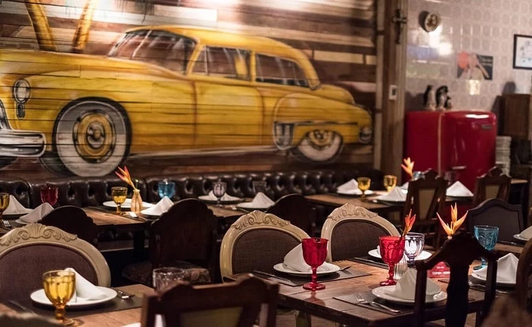
- Localização: Centro de Cuiabá.
- Mahalo Cozinha Criativa 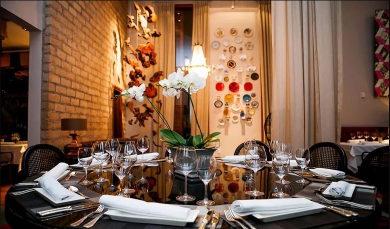
- Localização: Bairro Quilombo.
- Flor Negra Comfort-Food & Wine Bar 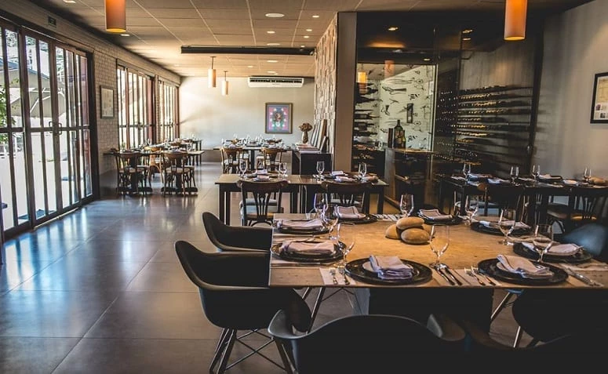
- Localização: Bairro Quilombo.
- Restaurante Avec 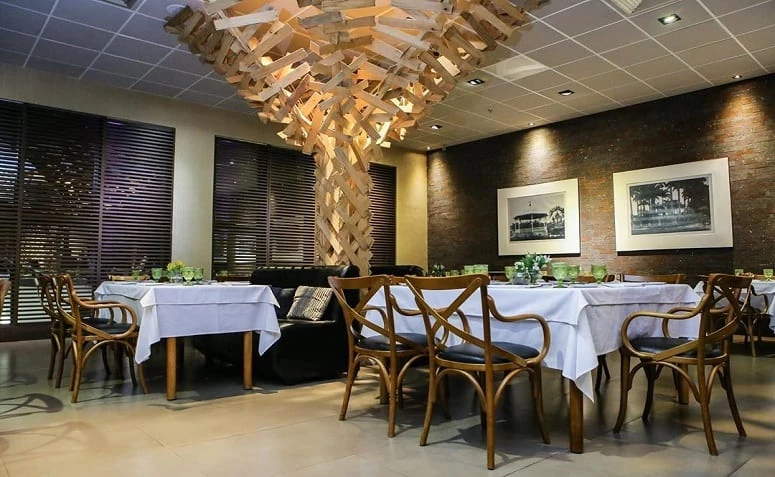
- Localização: Hotel Grand Odara, no bairro Ribeirão da Ponte.
Com decoração cubana e uma culinária contemporânea elogiada, o Varadero Bar e Restô está localizado no centro de Cuiabá e é referência pela sua originalidade e preços acessíveis.
No Varadero Bar e Restô é possível apreciar desde deliciosos risotos a vinhos de excelente qualidade.
O Mahalo Cozinha Criativa traz requinte à culinária cuiabana. Com pratos surpreendentes da cozinha contemporânea, o espaço promete uma experiência gastronômica que combina sensações e sabores.
Premiado e muito elogiado, o restaurante é uma escolha perfeita para ter bons momentos à dois.
Pratos desenhados e muito saborosos: esses são os principais elogios recebidos pelo Flor Negra. O restaurante, que foi eleito à voto popular como o melhor da cidade, ganha destaque por apresentar composições regionais de forma única e marcante.
É perfeito para um jantar especial ou para aquela reunião de amigos.
O Restaurante francês Avec possui alma cuiabana e promete uma experiência marcante de sabores. Ele oferece desde café da manhã até deliciosos jantares muito elogiados pelos seus visitantes.
Buffets completos de entrada e sobremesas saborosíssimas complementam as refeições por um preço justo.
Principais pontos culturais
- Festa de Nossa Senhora do Rosário 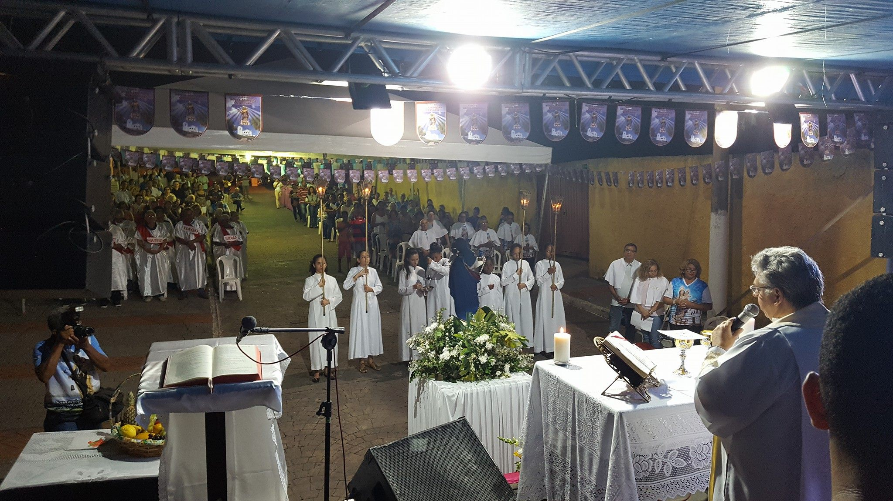
- Localização: Centro de Cuiabá.
- Festival de Inverno de Chapada dos Guimarães 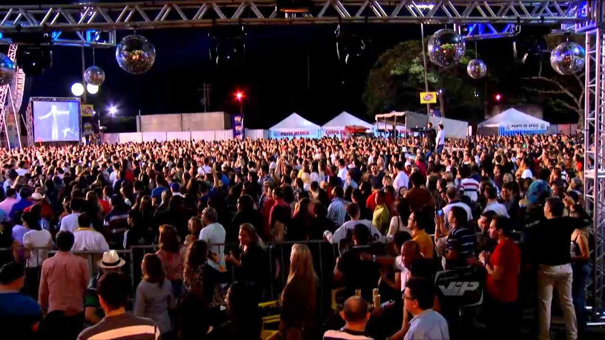
- Localização: Chapada dos Guimarães (cerca de 65 km de Cuiabá).
- Siriri e Cururu 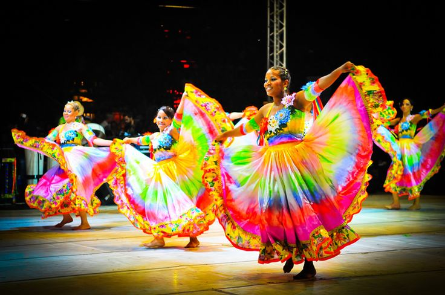
- Localização: Por toda a região.
- Teatro Zulmira Canavarros 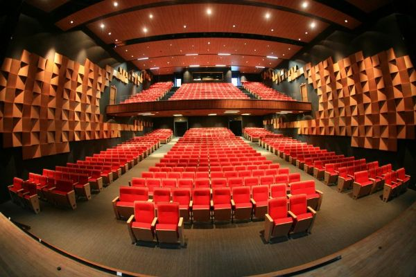
- Localização: Centro de Cuiabá.
A Festa de Nossa Senhora do Rosário é uma das maiores celebrações religiosas e culturais de Cuiabá, realizada anualmente em outubro. Durante essa festa, os moradores e turistas participam de procissões, apresentações de danças e shows de música popular.
Esta festa é uma das mais tradicionais da cidade e atrai visitantes interessados na religiosidade e nas manifestações culturais locais, como o cururu e o siriri.
O Festival de Inverno de Chapada dos Guimarães é um evento anual que reúne música, arte e cultura, com apresentações de bandas locais e nacionais, exposições de arte e atividades culturais. O festival aproveita o clima ameno do inverno para oferecer uma programação variada para os turistas.
O evento é uma das grandes atrações culturais da região e é uma oportunidade única para explorar a arte e a cultura de Mato Grosso em um ambiente natural deslumbrante.
O siriri e o cururu são dois estilos de dança e música típicos de Cuiabá e de Mato Grosso. Ambas as manifestações culturais têm raízes nas tradições indígenas e africanas, com danças em grupo e cantos que relatam a história e a vida do povo mato-grossense.
O siriri e o cururu são fundamentais para a preservação da cultura popular de Cuiabá e são frequentemente apresentados durante festas e celebrações, sendo considerados símbolos de identidade cultural da cidade.
O Teatro Zulmira Canavarros é um importante centro cultural de Cuiabá, onde são realizados eventos culturais, como peças de teatro, apresentações musicais e dança. O teatro oferece uma programação variada e é um ponto importante para a cena artística local.
Para quem se interessa por cultura e arte, o Teatro Zulmira Canavarros é um local essencial para desfrutar da produção cultural de Cuiabá e de Mato Grosso.